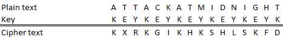

The Vigenère cipher is one of the most widely known substitution techniques. It is a polyalphabetic substitution, and shifts letters of the plaintext down the alphabet, according to the Caesar cipher. The difference is that the key can contain multiple letters, and so the letters are shifted not only by one offset. The Vigenère chiffre was considered unbreakable a long time, until Charles Babbage succeeded in deciphering it first in 1854.
The Vigenère cipher belongs to the polyalphabetic substitution ciphers and is their most prominent representative.
The Vigenère-Encryption is a polyalphabetic substitution, where the single alphabets are Caesar substitution alphabets. Thus, encrypting a text with the Vigenère algorithm is just Caesar-encrypting every n-th character with the first character of the key, the next n-th characters with the second character of the key, and so on.
An encryption is best prepared by writing the key which encrypts a character below it. In the following example, the text “ATTACKATMIDNIGHT” is encrypted with the keyword “KEY”. So, every third character is Caesar-encrypted with “K”, the next set of n-th-characters is encrypted with “E”, and the rest with “Y”:

To decrypt a Vigenère-encrypted text, the shift of characters from the encryption has to be reverted, like decrypting a Caesar-ciphertext – with the difference that different shifts have to be reverted. It’s also possible to inverse-encrypt it, by generating the inverse key to the encryption key, and “encrypting” the ciphertext with it. This inverse key is generated by taking each character (“each Caesar key”) and reverting it separately – the inversion rule is (Caesar-key: k, inverse Caesar-key: i): i = length(plain text alphabet) – k.